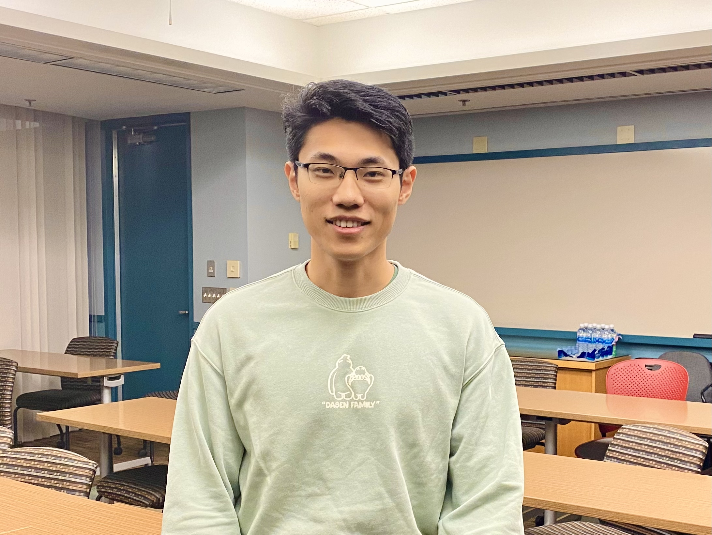
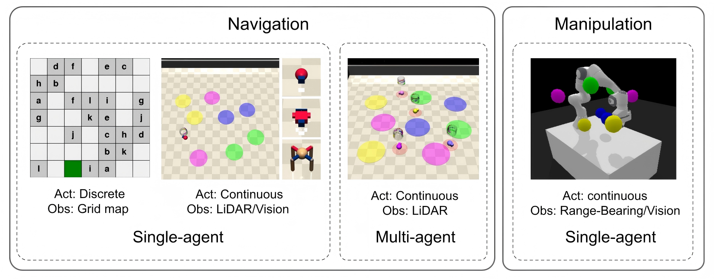
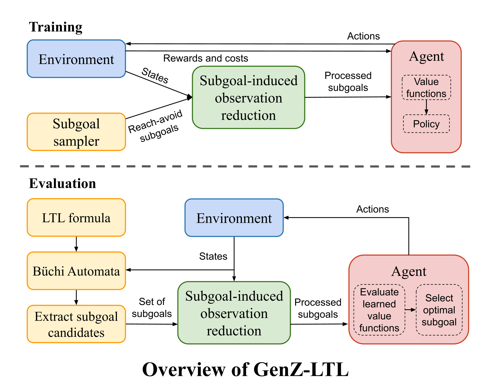
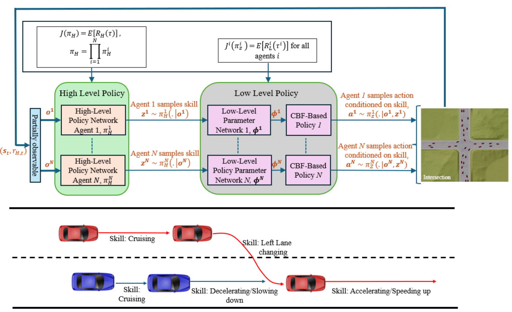
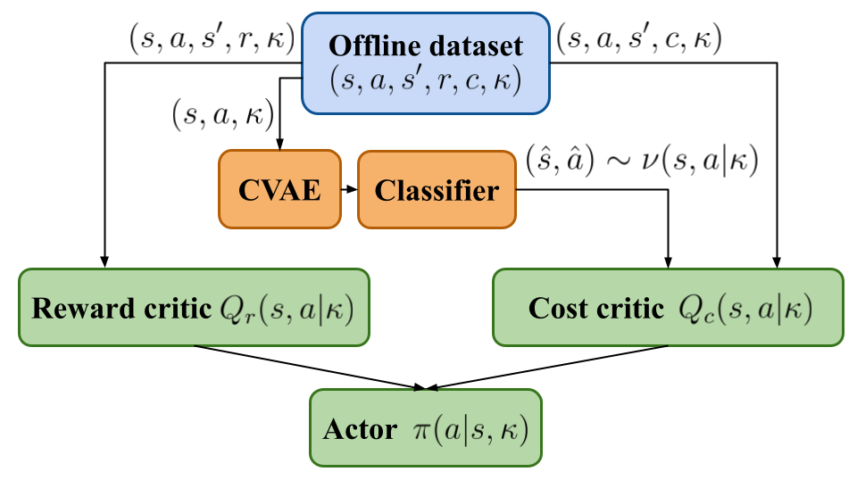
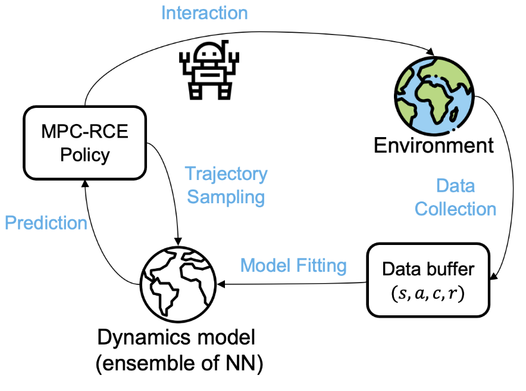
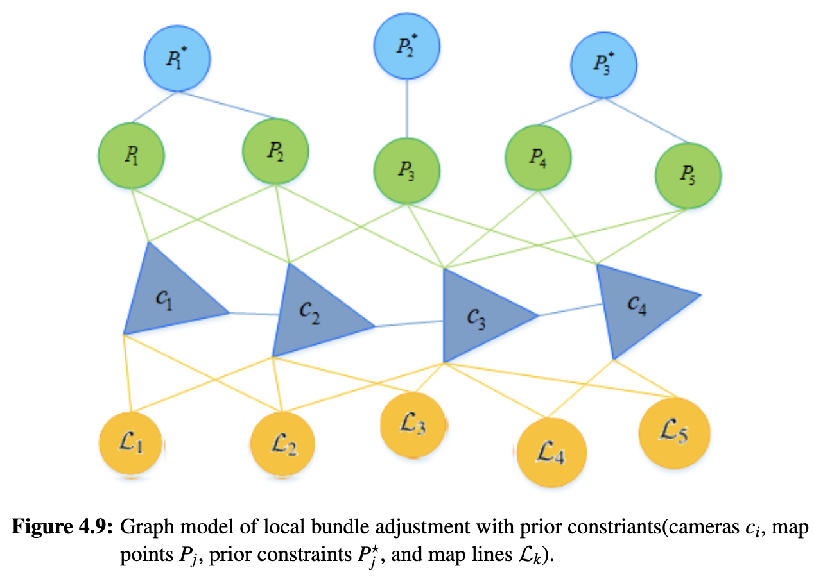
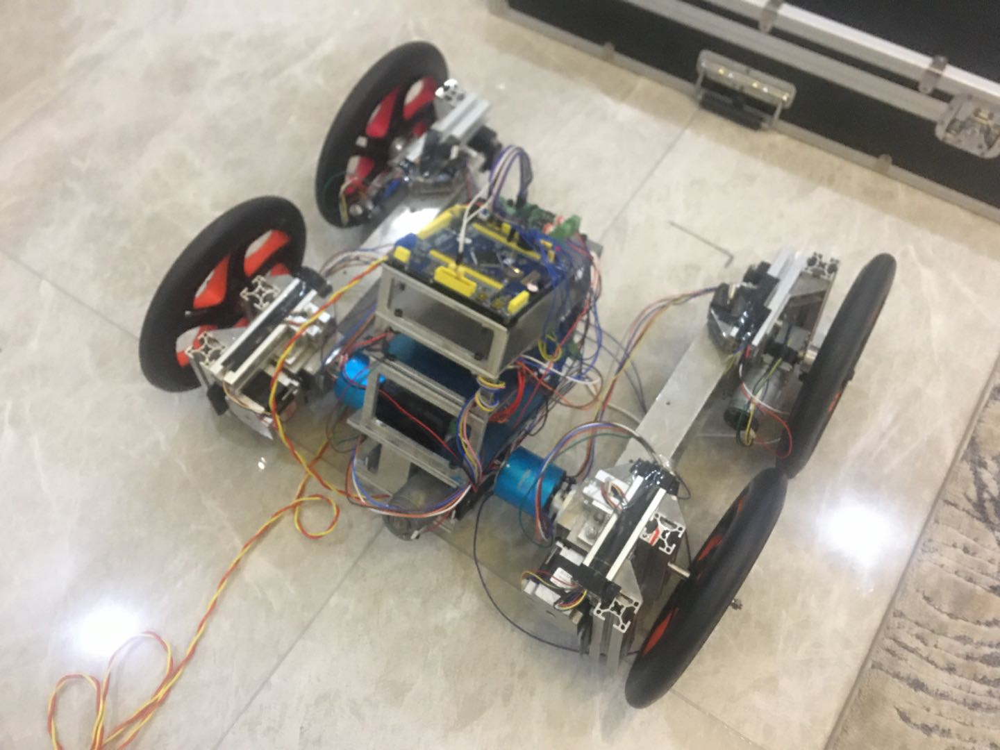
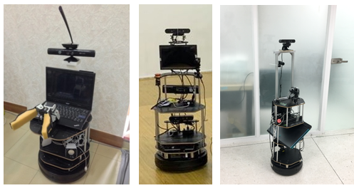

My research topics focuses on reinforcement learning as well as decision-making and controls in robitics, with the goal of deploying the learning-based algorithms to real-world safety-critical applications.

Publications
(
/
)
* indicates equal contribution.

SpecRLBench: A Benchmark for Generalization in Specification-Guided Reinforcement Learning
Zijian Guo,
İlker İşık,
H. M. Sabbir Ahmad,
Wenchao Li
Under review
[paper][code]

One Subgoal at a Time: Zero-Shot Generalization to Arbitrary Linear Temporal Logic Requirements in Multi-Task Reinforcement Learning
Zijian Guo,
İlker İşık,
H. M. Sabbir Ahmad,
Wenchao Li
NeurIPS 2025
[paper][code][website]

Hierarchical Multi-Agent Reinforcement Learning with Control Barrier Functions for Safety-Critical Autonomous Systems
H. M. Sabbir Ahmad,
Ehsan Sabouni,
Alexander Wasilkoff,
Param Budhraja,
Zijian Guo,
Songyuan Zhang,
Chuchu Fan,
Christos Cassandras,
Wenchao Li
NeurIPS 2025
[paper][code][website]

Constraint-Conditioned Actor-Critic for Offline Safe Reinforcement Learning
On the Robustness of Safe Reinforcement Learning under Observational Perturbations
Zuxin Liu,
Zijian Guo,
Zhepeng Cen,
Huan Zhang,
Jie Tan,
Bo Li,
Ding Zhao
ICLR 2023
ICML 2022 Safe Learning for Autonomous Driving Workshop, Best Paper Award (Runner-up) [paper][website]

Constrained Model-based Reinforcement Learning via Robust Planning
Autonomous Ground Delivery Robot: Localization, Perception and Planning, 2022
We developled a full-stack autonomous navigation pipeline including sensor calibration, mapping, localization, perception, planning, and control based on ROS.
Aditionally, I built a simulation environment for the roobt in Webots simulator, trained it using reinforcement learning algorithms and tested them in the real world.
Our robot is featured on CMU's website.
More details can be found in our documents.

Aiding Monocular SLAM with Prior Constraints, 2021
This is my master dissertation at UCL.
I proposed an approach to exploiting semantic and public prior information in a monocular SLAM system that utilises ORB features and line features.
These two types of information are preprocessed in a series of DBSCAN, MultiRANSAC, and point-to-point ICP to achieve better data association.
Experiment in KITTI datasets demonstrates that the method can reduce scale drift and therefore improve localization and mapping accuracy.

All-terrain Anti-interference Robot Based on the Optical Fiber Communication, 2020
We designed and built an all-terrain anti-interference robot aiming for disaster rescue from scratch.
We designed the 3D model of the robot in SolidWorks and performed the kinematic and dynamics simulation in Adams and Matlab.
Particularly, we developed a unique rolling wheeled robot chassis, which was patented, to surmount barriers.
The robot achieved mapping, localization and navigation functions using ROS packages, and remote communication via optical fiber.
This project won the first price of the National Training Program of Innovation and Entrepreneurship for Undergraduates (top 3%)

Intelligent Household Service Robots Development, 2019
We developed several intelligent household service robots that can interact with humans and achieve multiple tasks based on ROS.
The robot can locate sound source, recognize speech commands, perform computer vision tasks such as object classification and pose detection, and navigate through dynamic indoor environment without collision.
We competed in World Robot Summit challenges and RoboCup@Home competition and won 9 awards in total.
More details and video demos can be found in our website.
Service
Reviewing
Conferences: NeurIPS, ICLR, IROS, ICRA, CoRL, SIGGRAPH Asia, and NeuS.
Journals: TMLR, IEEE TCAD, IEEE TNNLS, and IEEE RA-L.
Teaching & Mentoring
Teaching: CMU 24-784 (Spring 2022) and BU ENGEK 125 (Fall 2025).
Mentoring: BU RISE Program (Summer 2026).
Contact
I am always happy to discuss research, collaboration, and opportunities in safe and robust reinforcement learning, neuro-symbolic reinforcement learning, and formal methods.